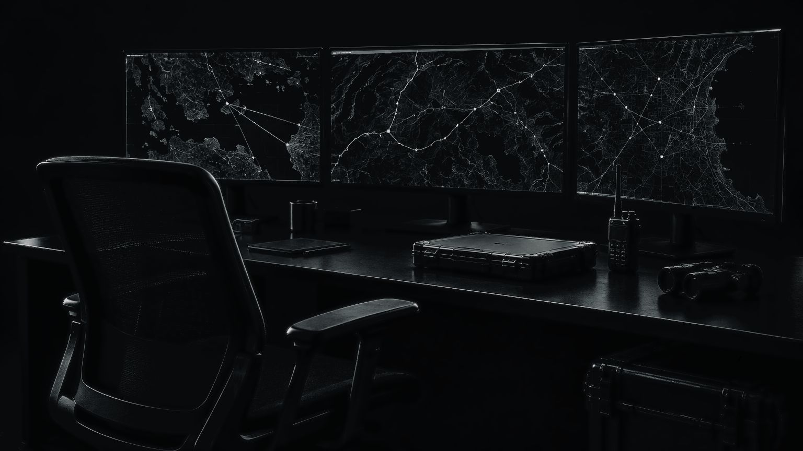
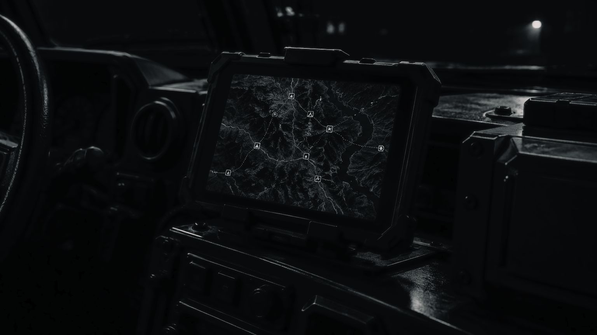
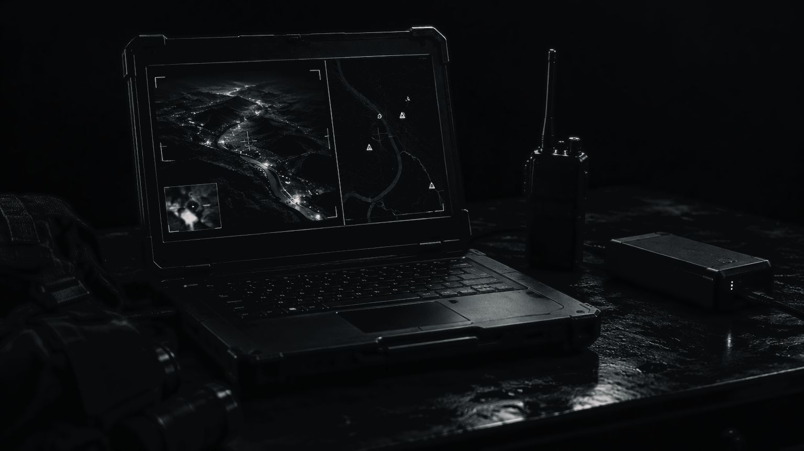

AGATA
Все для управления. В одной системе
Когда данные разнесены по приложениям, время уходит на поиск, сверку и передачу сведений.
В AGATA информация связана с объектами и задачами: у техники есть состояние и история, у задачи — участники и ресурсы, у события — источник. Платформа в разработке: готовность модулей сообщается отдельно, демонстрация — по запросу.


Что входит в платформу
Шесть частей одной системыОбъект на карте открывает связанные с ним данные, видео, события и задачи. Обсуждение и контроль выполнения идут в той же системе.
Каждому — свои инструменты
Роли разные, информация общаяВозможности
Что платформа берет на себяОсновные функции и сохраненные данные доступны локально. Когда связь возвращается, данные синхронизируются.
Независимые серверы обмениваются разрешенными данными. У каждой организации свои пользователи и правила доступа.
Роли определяют, кто видит и меняет данные. История хранит действия людей, устройств и автоматики.
API, SDK и плагины добавляют устройства, данные и функции. Каталог расширений учитывает версии и права.
Люди, техника и задачи — вместе
AGATA — цифровая основа экосистемы Darlein Defense: техника, связь, сенсоры и экипировка подключаются к одной системе.
Платформа проектируется для облака, своего сервера и изолированной инфраструктуры. Способ размещения и набор модулей выбирает команда.
Запросить презентацию
Расскажите о задаче — подготовим материалы под ваш сценарий. Подробности передаются после соглашения о конфиденциальности.
Ответ в течение двух рабочих дней.